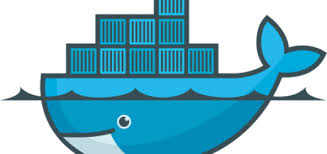
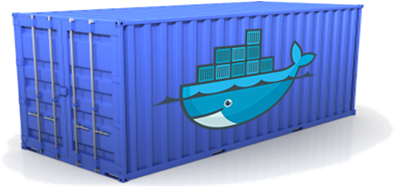
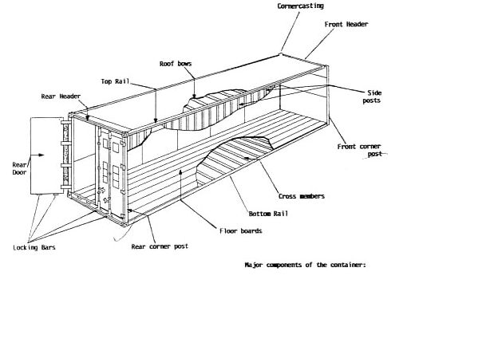
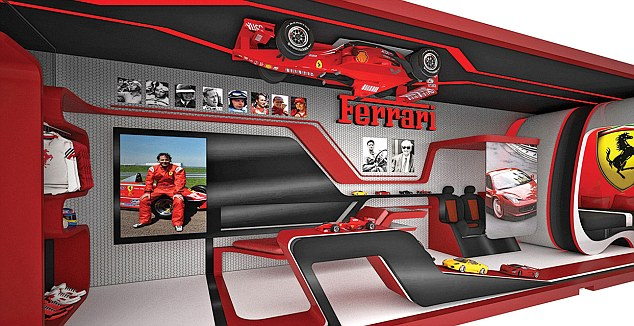

Hello Docker
Okke van 't verlaat @ CGI
Welk probleem willen we oplossen?
101+ mogelijke development stacks
- httpd + static files
- ruby on rails + mysql + memcache
- tomcat + jre8 + cassandra
- play + mongodb + activemq
- node.js + redis
- ....
101+ mogelijke runtime omgevingen
- lokale machine
- test omgeving
- geclusterde acceptatie omgeving
- productie omgeving ergens in de cloud
- ....
Matrix from hell

Klinkt als een bekend probleem

Hallo Container
Vanuit 'Ops' perspectief (de buitenkant)
Vanuit 'Dev' perspectief

Een paar belangrijke concepten
- Alles is bouwbaar dus ...
- Alles is weggooibaar
- VM's vs. Containers
- Images → Container
- Images repositories
- ....
En nog paar belangrijke concepten
- Volumes (data delen)
- Networking
- ....
Start a container
docker run -it ubuntu
Start a container and run a command inside
docker run ubuntu psPID TTY TIME CMD
1 ? 00:00:00 ps
Start a container and detach
docker run -d nlcgi/redis-srv
docker psCONTAINER ID IMAGE
3992ab89480d nlcgi/redis-srv:latest
Share a volume with our host OS
docker run -v /data:/data -it nlcgi/base
Share a volumes between containers
docker create -v /dbshare --name shared-volume nlcgi/base
docker run --volumes-from shared-volume -it nlcgi/rubydev
Link two containers
docker run --name redis -d nlcgi/redis-srv
docker run --link redis:db -it nlcgi/redis-cli
build an image from a Dockerfile
docker build -t "nlcgi/base" images/nlcgi-base/
docker images
Simple Dockerfile
FROM ubuntu
ENV http_proxy http://proxy.nl.logica.com:80
ENV https_proxy http://proxy.nl.logica.com:80
ENV no_proxy=localhost,127.0.0.1
RUN apt-get update -y
A bit more sophisticated
FROM nlcgi/base
RUN apt-get install -y redis-server
EXPOSE 6379
ADD startup.sh /tmp/
ENTRYPOINT exec /tmp/startup.sh
Examples

https://github.com/okke/mydockers